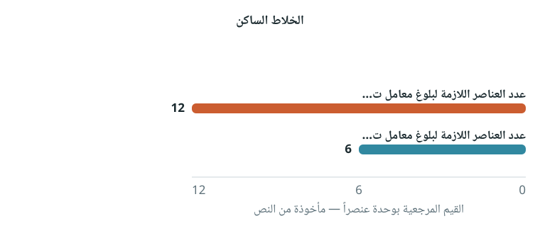

الخلاط الساكن
Static Mixer
الخلاط الساكن جهاز خلط داخل أنبوب بلا أجزاء متحركة، يعتمد على عناصر ثابتة تشطر مجرى السائل وتدوّره وتعيد جمعه، فتحصل الخلط من طاقة الضغط التي يبذلها المضخ، لا من محرّك.
الخلاط الساكن جهاز خلط يُثبَّت داخل أنبوب أو قناة، ولا يحتوي أجزاء متحركة. ويصنّفه Stankiewicz وMoulijn ضمن معدات التكثيف التي لا تُجري تفاعلات كيميائية، ويذكره أيضاً في صورة خلاط ساكن-مفاعل ضمن المعدات التي تُجري تفاعلات. وتشرح مراجعة Thakur وزملائه أن الخلط في هذه الأجهزة يتحقق بحركة مجاري السائل وهي تُلوّى وتُشطر وتُدار وتُعاد جمعها أثناء مرورها في الهندسة الداخلية للعناصر. ويصف Talhaoui وزملاؤه التصميم القياسي لخلاط Kenics بأنه قناة أسطوانية تحمل مجموعة ريش حلزونية ملتوية بالتناوب يميناً ويساراً بزاوية 180 درجة، وأن كل عنصر يُثبَّت على المحور بحيث تكون حافته الخلفية متعامدة على الحافة الأمامية للعنصر التالي. ويذكر المصدر نفسه أن من مزايا الخلاطات الساكنة انعدام الأجزاء المتحركة، فتنخفض الطاقة المستهلكة لأن الطاقة اللازمة تُقدَّم داخل الخط من المضخة التي تدفع التدفق، وأنها تُختار لسرعة الخلط وجودته وضيق توزيع أزمنة المكوث وتنظيفها الذاتي وقلة صيانتها. ويُعدّ هبوط الضغط الثمن المقابل لهذا كله.
كيف تعمل الظاهرة؟
الخلط في الخلاط الساكن لا يأتي من اضطراب عشوائي بل من هندسة مفروضة. كل عنصر يقسم السائل إلى طبقات، ويُدوّرها حول محور التدفق، ثم يعيد جمعها في العنصر التالي الذي يدوّرها في الاتجاه المعاكس. فيتضاعف عدد الطبقات مع كل عنصر تضاعفاً أسّياً، ويضيق سُمك كل طبقة حتى يصبح الانتشار الجزيئي كافياً لإنهاء الخلط. ويصف Talhaoui وزملاؤه هذا بأن السائل ينتقل باستمرار من مركز الأنبوب إلى الجدار ويعود، وأن أنماط تقسيم التدفق تنمو أسّياً مع كل ريشة. ونتيجة ذلك أن الخلط يتحقق في التدفق الصفحي أيضاً، حيث لا يوجد اضطراب طبيعي يُعتمد عليه.
العلاقة بالأرقام
المقياس المعياري لجودة الخلط هو معامل التغاير، وهو الانحراف المعياري لتركيز المادة المتتبَّعة مقسوماً على متوسطها. ويُعرَّف طول الخلط في مراجعة Jiang وزملائه بأنه الطول اللازم لبلوغ معامل تغاير 0.05، وهو حدّ متعارف عليه في العمليات الصناعية. ويبيّن المصدر نفسه أن عدد العناصر اللازم يتبع نسبة الباع: عند رقم رينولدز 1 يحتاج الباع 0.4 إلى 12 عنصراً، بينما يحتاج الباع 0.2 إلى 6 عناصر. أما الثمن فهو هبوط الضغط، ويُقاس عادةً بمعامل يُنسب هبوط الضغط فيه إلى هبوط أنبوب فارغ بالطول نفسه.
مفاهيم متقاربة
التمييز الأول أن الخلاط الساكن جهاز خلط لا جهاز تقليب: لا يخزّن السائل ولا يخلطه زمنياً، بل يخلطه مرة واحدة أثناء مروره، فزمن المكوث قصير وتوزيعه ضيق. والتمييز الثاني أن غياب الأجزاء المتحركة لا يعني غياب استهلاك الطاقة: الطاقة تُستهلك في المضخة على شكل هبوط ضغط دائم، فالحساب الاقتصادي يجب أن يضمّ كلفة الضخ لا كلفة المعدة وحدها. والتمييز الثالث أن الخلاط الساكن ليس بديلاً عاماً عن الخزان المقلّب: هو أنسب للتدفق المستمر وللموائع عالية اللزوجة حيث يصعب الاضطراب، وأقل ملاءمةً حيث تُطلب سعة تخزين أو تفاعل طويل.
حدود التطبيق
الحدّ الأساسي هو المقايضة بين جودة الخلط وهبوط الضغط: يذكر Tariq وزملاؤه أن خفض هبوط الضغط يُضعف كفاءة الخلط والعكس، وأن هبوط الضغط هو العامل المحدّد في اختيار الخلاط. والحدّ الثاني أن الخلاط الساكن لا يوفّر سعة ولا زمن مكوث طويلاً، فالتفاعلات البطيئة تحتاج حجماً أو حرارة إضافية. والحدّ الثالث أن الأداء يعتمد على التصميم الهندسي للعنصر، فالأرقام المنشورة لخلاط Kenics لا تُنقل إلى تصميم آخر بلا تحقق. والحدّ الرابع أن أرقام عدد العناصر المذكورة أعلاه مأخوذة من محاكاة CFD لا من قياس مختبري، ويجب أن تُقرأ على هذا الأساس.

| الكمية | القيمة | المصدر |
|---|---|---|
| زاوية التواء كل عنصر في خلاط Kenics القياسي | 180 درجة | [4] |
| معامل التغاير الذي يُعدّ عنده الخليط متجانساً | 0.05 بلا بُعد | [3] |
| عدد العناصر اللازمة لبلوغ معامل تغاير 0.05 عند رقم رينولدز 1 ونسبة باع 0.4 | 12 عنصراً | [3] |
| عدد العناصر اللازمة لبلوغ معامل تغاير 0.05 عند رقم رينولدز 1 ونسبة باع 0.2 | 6 عنصراً | [3] |
المصادر
- 1 Process Intensification: Transforming Chemical Engineering — American Institute of Chemical Engineers (2000). www.aiche.org/sites/default/files/docs/news/010022_cep_stankiewicz.pdf · اطُّلع عليه 2026-11-28
- 2 Static Mixers in the Process Industries - A Review — Institution of Chemical Engineers / Elsevier (2003). doi.org/10.1205/026387603322302968 · اطُّلع عليه 2026-11-28
- 3 Effect of Aspect Ratio on the Mixing Performance in the Kenics Static Mixer — MDPI (Processes) (2021). doi.org/10.3390/pr9030464 · اطُّلع عليه 2026-11-28
- 4 Effect of Geometry Design on Mixing Performance of Newtonian Fluids using Helical Overlapped Mixer Elements in Kenics Static Mixer — Journal of Applied Fluid Mechanics (2021). doi.org/10.47176/jafm.14.06.32494 · اطُّلع عليه 2026-11-28
استشهد بهذا المصطلح
الصيغتان مبنيتان من بيانات الصفحة نفسها: العنوان والتاريخ ورابط النسخة المنشورة.
الخلاط الساكن — Static Mixer. (2026). ديوان المعرفة — انفراد. https://infiradev.com/diwan/terms/term-static-mixer.html
@misc{term-static-mixer2026,
title = {الخلاط الساكن},
titleaddon = {Static Mixer},
howpublished = {{ديوان المعرفة — انفراد} — مرجع علمي عربي},
year = {2026},
url = {https://infiradev.com/diwan/terms/term-static-mixer.html},
urldate = {2026-11-28},
note = {مراجعة علمية: Abdullah Al-Huwaidi}
}
راجعه: Abdullah Al-Huwaidi · 2026-11-28 · آخر تحديث 2026-11-28